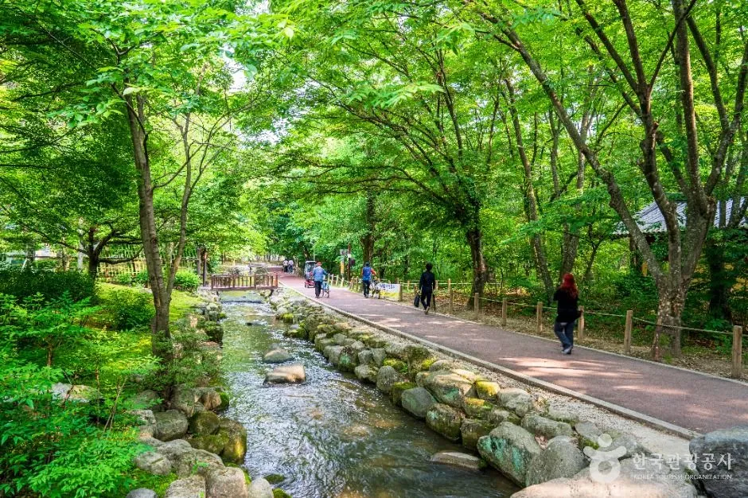
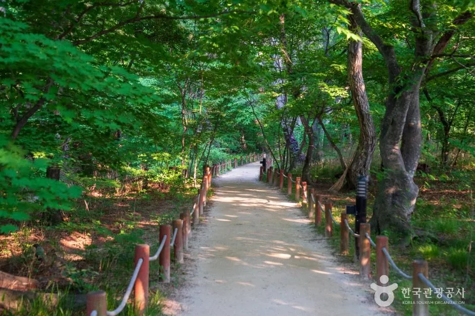
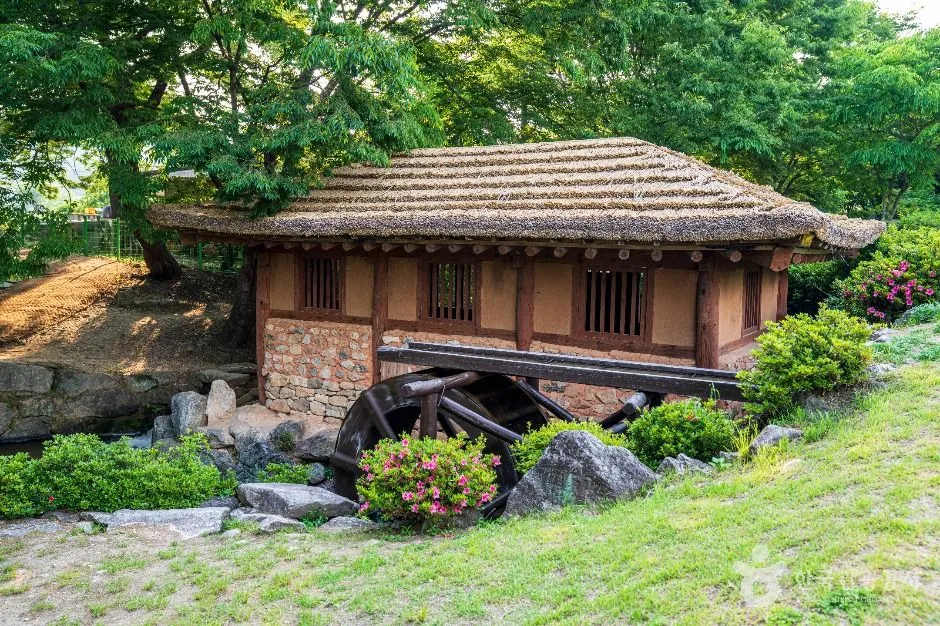
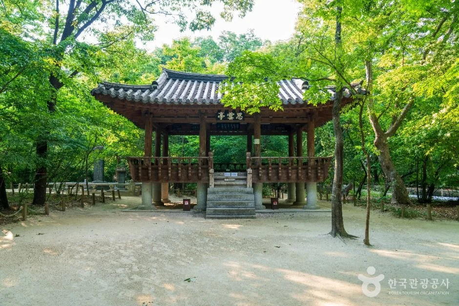
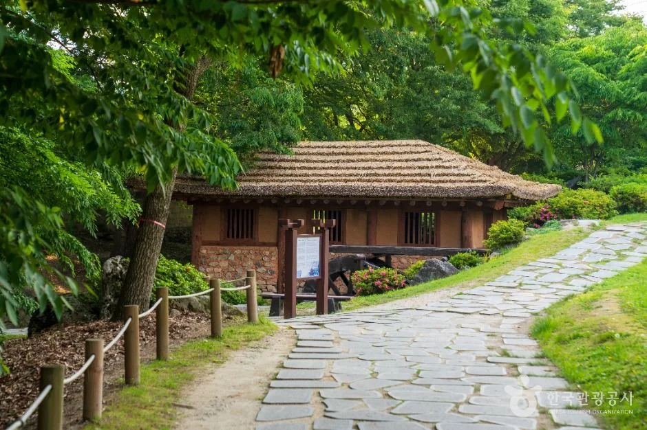
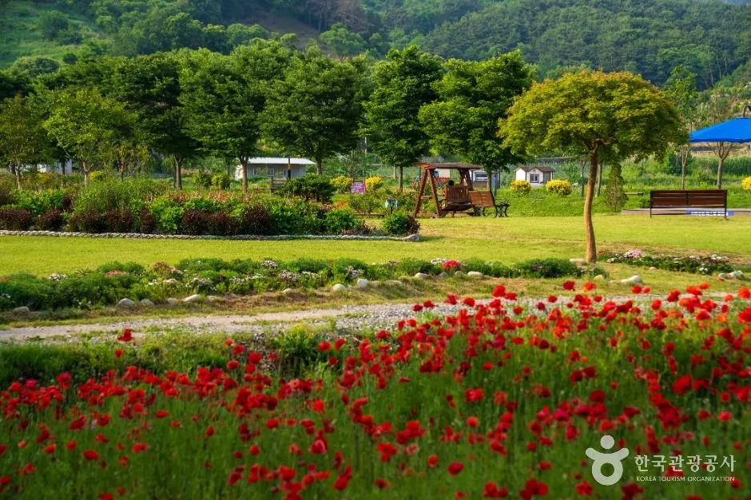
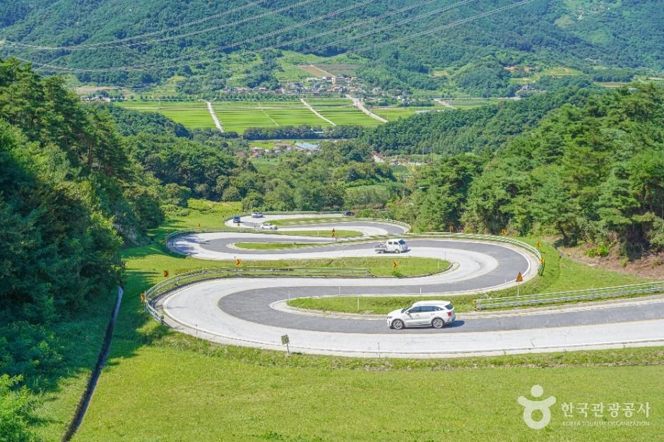
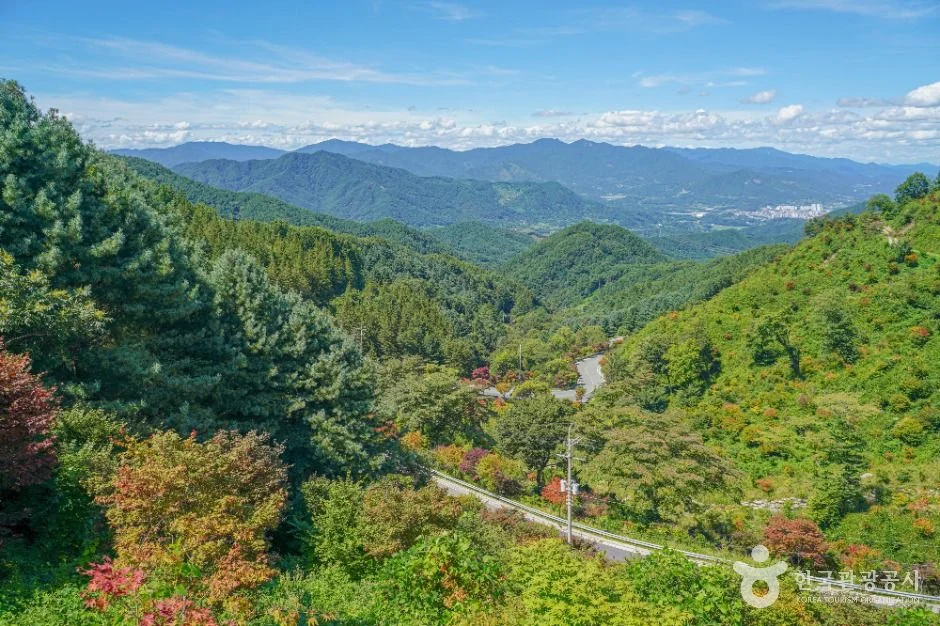
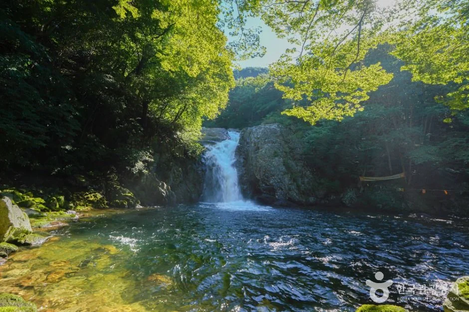
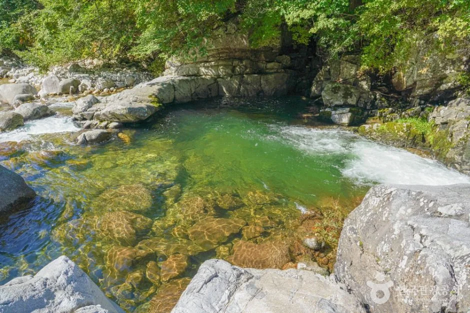

▲ 제21회 함양산삼축제가 열리는 상림공원. 연못과 숲이 어우러진 공원이 축제장이다. 사진=한국관광공사
"산삼을 사러 가는 축제가 아니라, 캐러 가는 축제라던데." 제21회 함양산삼축제가 10월 7일부터 11일까지 닷새간 상림공원 일원에서 열린다. 올해 슬로건은 "산삼에 물들고, 함양에 머물다"다. 산양삼을 사고 캐고 맛보는 프로그램에 웰니스, 야간 공연, 어린이 놀이 공간을 더해 머물다 가는 축제로 꾸렸다는 것이 보도의 공통된 설명이다. 이 글은 상림 숲 자체보다 축제 현장을 자차로 다녀오려는 사람에게 필요한 일정, 프로그램, 비용, 산양삼 구매 때 확인할 점을 정리했다. 주차장 위치·수용 대수와 셔틀 운행 여부는 이번 축제에 대해 공식 자료에서 찾지 못해 따로 표시했다.
1. 한눈에 보기 — 일정·장소·비용
개막은 10월 7일(수), 폐막은 11일(일)이다. 개막일에는 "2027 함양방문의 해" 선포식과 400대 규모 드론 라이트쇼가, 폐막일에는 불꽃쇼가 예정돼 있다(아시아경제·뉴스핌·국제뉴스 보도). 입장은 축제 정보 사이트(Korea Trip Tips) 기준 무료로 안내되지만, 이번에 다시 확인한 공식 누리집과 경남도민일보·전국매일·뉴스경남 보도에도 일반 입장료 안내가 없어 단일 출처 상태다. 야간 프로그램인 산막나이트(오후 7시)만 별도로 1만 원을 받는다고 보도됐다.
| 항목 | 내용 | 확인 상태 |
|---|---|---|
| 기간 | 2026년 10월 7일(수)~11일(일), 5일간 | 복수 보도 일치 |
| 장소 | 경남 함양군 함양읍 상림공원 일원(상림공원 주소 교산리 1073-1) | 복수 보도 일치 |
| 슬로건 | "산삼에 물들고, 함양에 머물다" | 복수 보도 일치 |
| 공연·운영 시간 | 10:00~21:00 | 단일 출처(축제 정보 사이트), 프로그램별 시각은 공식 확인 필요 |
| 입장료 | 무료. 산막나이트(10월 9~10일 오후 7시)는 1만 원 | 입장 무료는 Korea Trip Tips 단일 출처(공식 누리집에는 입장료 안내 없음), 산막나이트 요금은 뉴스핌·아시아경제 일치 |
| 개막일 행사 | 10월 7일 "2027 함양방문의 해" 선포식·400대 드론 라이트쇼 | 아시아경제·뉴스핌 일치(시각 미확인) |
| 폐막일 행사 | 10월 11일 경남도민예술단 공연·불꽃쇼 | 뉴스핌·국제뉴스(시각 미확인) |
| 문의 | 함양산삼축제추진위원회 055-964-3353(공식 누리집·함양군 페이지 일치), 함양군 산삼항노화 담당 055-960-6430 | 함양군 공식 소개 페이지 |
| 지난해(제20회, 2025.9.18~22) 방문객 | 5일간 21만여 명, 산양삼 판매존·농특산물 판매관 매출 12억 원, 휴일(20~21일) 방문객이 가장 많았다고 보도 | 쿠키뉴스 2025.9.26 보도(공식 수치 직접 확인 못함) |
ℹ️ 공식 안내는 누리집에서
프로그램 시간표와 공지는 함양산삼축제 공식 누리집에서 확인할 수 있다. 함양산삼축제 누리집 바로가기
2. 자차로 가기 — 주차·셔틀·붐비는 시간대

▲ 상림공원은 축제장이 들어서는 함양읍 도심 가까이 있다. 숲 사이 물길을 따라 산책로가 이어진다. 사진=한국관광공사
내비게이션 목적지는 "상림공원"(경남 함양군 함양읍 교산리 1073-1)로 잡으면 된다. 다만 올해 축제의 임시주차장 위치와 수용 대수, 무료 셔틀 운행 여부는 공식 자료와 보도에서 확인하지 못했다. 지난해 축제 때 셔틀버스를 운행했다는 이야기가 있으나 두 차례 검증에서도 공식 자료로 확인하지 못해 싣지 않는다. 개막 하루 전(10월 6일) 기준 공식 누리집 공지 목록과 보도자료에도 주차·셔틀·교통통제 안내는 올라오지 않았다. 올해 운행 여부는 축제 문의처로 확인하는 편이 안전하다.
| 항목 | 확인된 내용 | 못 찾은 내용 |
|---|---|---|
| 목적지 | 상림공원(함양읍 교산리 1073-1) | 공식 주차장 위치·수용 대수 |
| 셔틀 | 확인하지 못함(공식 누리집·함양군 페이지에 안내 없음) | 2026년 운행 여부·노선·요금 |
| 교통통제 | 확인하지 못함 | 도로 통제 구간·시간 |
| 고속도로 접근 | 확인하지 못함 | 추천 IC·소요 시간 |
| 안전관리 | 함양군은 10월 6일 합동 안전점검에서 개막식·폐막식·주요 공연 시간대 인파 집중에 대비한 이동 경로와 안전요원 배치를 점검 | 구체 인력·주차 대책 |
붐비는 시간대는 공식 수치가 없지만, 합동 안전점검 보도가 짚은 개막식(7일), 폐막식(11일), 주요 공연 시간대가 집중 구간으로 예상된다. 400대 드론 라이트쇼와 폐막 불꽃쇼는 해 진 뒤 열릴 것으로 보여 주변 도로가 늦은 시간까지 막힐 수 있다. 확인된 사실이 아니라 추정이다. 지난해 제20회 축제는 5일간 21만여 명이 찾았고 그중 휴일(20~21일)에 역대 최대 인파가 몰렸다고 보도됐다. 올해도 주말인 10일(토)·11일(일)이 가장 붐빌 가능성이 있고, 평일 낮(8~9일 오전)이 상대적으로 한산할 것으로 보인다. 모두 추정이며 올해 수치는 아니다.
3. 프로그램 — 캐고, 찾고, 걷고, 밤에는 공연
대표 프로그램은 황금산삼 찾기와 산삼캐기체험이다. 황금산삼 찾기는 필봉산 숲에서 하루 세 차례 열리고, 산삼캐기는 산삼밭에서 특징과 채취법을 배운 뒤 5년근 산양삼을 직접 캐서 가져가는 방식으로 매일 운영된다고 보도됐다. 산양삼 담금주 만들기 체험도 있다. 체험 참가비와 예약 방식은 보도에서 찾지 못했다.
| 구분 | 프로그램 | 일정 | 비고 |
|---|---|---|---|
| 산삼 | 황금산삼 찾기(필봉산) | 매일 하루 3회 | 순금·캐릭터 인형 경품(경남도민일보 보도) |
| 산삼 | 산삼캐기체험(5년근 산양삼) | 매일 | 참가비 미확인 |
| 산삼 | 산삼경매(공식 누리집 소개) | 피크닉존 기준 하루 3회(경남도민일보 보도, 장소·시각 세부 미확인) | 방식·참여 조건 미확인 |
| 산삼 | 산양삼 담금주 체험(룰렛 이벤트 병행 보도) | 축제 기간 | 참가비 미확인 |
| 웰니스 | 항노화관: 건강 진단·반신욕·명상·팥찜질팩·젤파스 만들기 | 축제 기간 | 일부 체험 비용 미확인 |
| 웰니스 | 맨발걷기 힐링 페스타(걷기 대회·건강 강연) | 10월 10일 | 신청 방식 미확인 |
| 야간 | 산막나이트(산삼막걸리 또는 산삼식혜·편육·부추전과 공연) | 10월 9~10일 오후 7시 | 입장료 1만 원 |
| 가족 | 연지공원 패밀리존(6,000㎡): 놀이터·푸드트럭·함양오락실·쿠키 만들기·한지책·솟대 만들기 | 축제 기간 | 신규 피크닉존(청년 베이커리·카페) |
| 행사 | 폐막일(11일) 완등인의 날, 피크닉존 DJ 프로그램 | 11일 등 보도 일자별 | 세부 시각 미확인 |
| 먹거리 | 먹거리관 약 500석, 흑돼지 등 지역 음식 | 축제 기간 | 가격 미확인 |
4. 산양삼 살 때 — 공식 근거로 확인할 것
축제 현장에서 파는 것은 대부분 산양삼이다. 산양삼은 인삼 종자를 산에 뿌려 농약·비료 없이 자연 상태로 키운 삼을 가리키며, 밭에서 키우는 인삼과 구분된다는 설명이 일반적이다. 한편 판매용 산양삼에는 「임업 및 산촌 진흥촉진에 관한 법률」에 따라 품질검사와 표시 의무가 있고, 헌법재판소가 이 의무 규정을 합헌으로 결정했다는 보도가 있다. 국가법령정보센터 조문(시행 2022.9.11 기준 조회본)으로는 제3장 "특별관리임산물의 관리"의 제18조의4(품질검사)와 제18조의6(품질표시 등)이 해당하고, 위반 시 벌칙은 제32조에 있다. 법령은 개정될 수 있어 조문 번호가 바뀌었는지는 법제처에서 최신본을 확인하는 것이 안전하다. 표시 방식(라벨 기재 항목)은 직접 확인하지 못했다.
이번 축제 차원의 장치는 보도로 확인된다. 판매 매장에서는 실속형(저가형으로 쓴 보도도 있음) 산양삼을 의무 판매하고, 판매 제품에는 품질 검증 인증 태그를 붙이며, 구매 금액에 따라 지역상품권 페이백을 준다. 페이백 비율·한도와 실속형 제품의 가격 기준은 찾지 못했다.
✅ 구매 전 체크리스트(확인된 것 중심)
· 인증 태그가 붙은 제품인지 확인(축제 판매 제품 대상)
· 품질검사 표시가 있는지 확인(판매용 산양삼 의무 사항)
· 실속형 제품 가격과 페이백 조건은 현장에서 직접 문의(공식 기준 미확인)
· 산삼과 산양삼을 혼동하지 말고 "무엇을 파는지" 명칭을 물어볼 것
· 가격만 보고 판단하지 말고 연근, 뿌리 크기, 보관법을 설명받을 것
5. 축제와 묶는 코스 — 상림·연지공원

▲ 상림공원 숲길. 천연기념물 제154호 상림은 축제장과 같은 공간이다. 사진=한국관광공사
상림 숲 자체의 역사와 단풍 시기, 거창 수승대까지 이어지는 코스는 함양 상림 은행나무길 기사에 정리해 두었으니 여기서는 축제 동선만 다룬다. 보도에 따르면 패밀리존은 연지공원에, 체험 일부는 필봉산 숲에 있다. 같은 날 산삼캐기, 상림 산책, 연지공원 휴식을 모두 하려면 걷는 거리가 꽤 되므로 편한 신발이 좋다. 각 장소 사이 거리와 이동 수단은 확인하지 못했다. 이 글의 상림공원 사진은 한국관광공사 제공 공원 상시 풍경이며, 이번 축제 현장 사진이 아니다(축제 공식 홈페이지 사진은 이용 허락 문구가 없어 싣지 않았다).

▲ 숲속 물레방아. 상림공원 산책 중 만날 수 있는 볼거리다. 사진=한국관광공사

▲ 상림공원의 정자와 광장. 축제장 동선 중간에 쉬어 가기 좋은 구간으로, 행사장 그 자체가 아닌 상시 공원 시설이다. 사진=한국관광공사
| 시간대 | 내용 | 메모 |
|---|---|---|
| 오전 | 도착, 주차, 산삼캐기·황금산삼 찾기 확인 | 체험 시각표는 현장·누리집에서 확인 |
| 점심 | 먹거리관 식사 | 약 500석 규모로 보도 |
| 오후 | 상림 숲길 산책, 판매장 둘러보기 | 구매는 마지막에 하면 짐이 줄어든다 |
| 저녁 | 산막나이트(9~10일) 또는 개막·폐막 이벤트 | 개막일 드론쇼, 폐막일 불꽃쇼는 혼잡 가능성 |

▲ 상림공원 안 초가 건물과 석판길. 주차 후 행사장까지 걸을 때 만나는 평지 구간이다. 사진=한국관광공사

▲ 공원 한편의 꽃밭. 사진은 한국관광공사 보유 자료로 촬영 시기가 이번 축제와 다를 수 있고, 계절 개화 상태는 해마다 다르다. 사진=한국관광공사
6. 축제 뒤 하루 더 — 오도재·용추계곡
함양읍에서 차로 이어 갈 만한 곳으로 한국관광공사가 소개하는 오도재와 지리산조망공원(마천면 지리산가는길 534)과 기백산 용추계곡(안의면 신안리)이 있다. 오도재는 굽이굽이 이어지는 고갯길과 지리산 능선 조망이 특징이고, 용추계곡은 폭포와 너럭바위 물길이 이어지는 계곡이다. 두 곳 모두 축제와 별개의 상시 관광지라 축제 기간 혼잡과 무관하게 방문할 수 있다. 읍내에서 각 곳까지 소요 시간과 주차 사정은 확인하지 못했다. 지리산 쪽 백무동·칠선계곡은 이 글에서는 다루지 않았다.

▲ 지리산 오도재의 굽이길. 축제장이 아니라 함양 지리산 쪽 드라이브 코스다. 사진=한국관광공사

▲ 지리산조망공원 일대에서 보이는 산줄기 풍경. 사진=한국관광공사

▲ 기백산 용추계곡의 폭포. 안의면 쪽 계곡 코스다. 사진=한국관광공사

▲ 용추계곡 바위 사이의 맑은 소(沼). 촬영 시기는 이번 축제와 무관하다. 사진=한국관광공사
| 장소 | 주소 | 특징 | 확인 못한 것 |
|---|---|---|---|
| 오도재·지리산조망공원 | 마천면 지리산가는길 534 | 고갯길 드라이브, 지리산 조망 | 주차·소요 시간 |
| 기백산 용추계곡·용추폭포 | 안의면 신안리 | 폭포·계곡 | 주차·입장 여부 |
| 상림공원 | 함양읍 교산리 1073-1 | 축제장 겸 천연기념물 숲 | 축제 중 주차 대책 |
7. 정리
제21회 함양산삼축제는 10월 7~11일 상림공원 일원에서 열리며, 황금산삼 찾기와 산삼캐기가 하루 단위로 운영된다. 입장은 무료로 안내되지만 산막나이트(9~10일)는 1만 원이다. 개막일 드론 라이트쇼(400대), 10일 맨발걷기 힐링 페스타, 폐막일 경남도민예술단 공연과 불꽃쇼가 이어진다.
자차 방문자는 내비를 "상림공원"으로 맞추되 올해 임시주차장·셔틀·교통통제는 확인하지 못한 만큼 출발 전에 축제 측(055-964-3353)에 문의하자. 개막·폐막·주요 공연 시간대와 주말(10~11일)은 붐빌 가능성이 있다(지난해 휴일 최다 방문 보도에 따른 추정). 산양삼은 인증 태그와 품질검사 표시를 확인하고, 실속형 제품 가격·페이백 조건은 현장에서 따로 묻는 것이 좋다. 체험 참가비도 공개된 수치를 찾지 못했다.